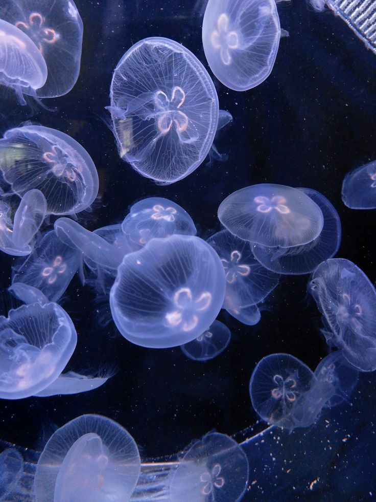

Ubur-ubur atau jellyfish adalah hewan laut yang memiliki tubuh lembut dan transparan seperti jeli. Mereka hidup di hampir semua laut di dunia, dari perairan dangkal hingga laut dalam yang gelap.
Meskipun terlihat indah dan lembut, beberapa jenis ubur-ubur memiliki racun yang kuat untuk melindungi diri dari predator. Namun, mereka juga berperan penting dalam menjaga keseimbangan ekosistem laut.